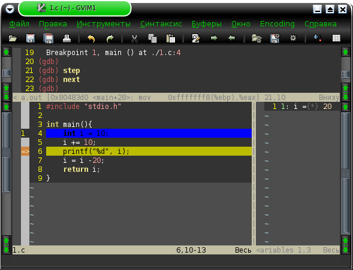

Содержание:
Введение
В отличие от emacs, который поддерживает отладку "искаропки", редактор Vim или его графическая версия по умолчанию не имеют средств отладки С/С++ программ. Однако, Vim в смысле отладки тоже не стоит на месте. Добрые люди пишут различные программы, плагины, патчи для поддержки отладчика GDB в (g)Vim. Многие из них уже выложены на официальный сайт программы: http://Vim.Org/scripts/.... Как видно, многие из этих утилит уже устарели и имеют дату последнего обновления более двух лет назад.
В этой статье будет рассмотрен проект Clewn. Это один из самых старых, но всё ещё активно развивающихся проектов. Clewn предоставляет полную поддержку отладчика GDB в редакторе Vim: точки останова, просмотр переменных, управление GDB напрямую командами и т.д. Это возможно сделать двумя способами: через отдельную программу Clewn, или через VimGDB патч для Vim. Clewn контролирует Vim через netBeans сокет, запускается и выполняется отдельно, сообщая команды Vim. Однако для того, что бы использовать Clewn, Vim должен быть скомпиллирован с поддержкой netBeans. Если Clewn использовать не получается - можно использовать VimGDB. Он накладывается на Vim до его сборки и выполнен в виде дополнительной опции компиляции. И Clewn и VimGDB используют один и тот же функциональный код, так что результат будет приблизительно один и тот же.
Установка Clewn
Установка Clewn абсолютно стандартна:
./configure && su -c 'make && make install'
host: gvim -c "run clewn.vim" -nb:target_ip_address
target: clewn -x pathnames_map -nb:target_ip_address
Установка VimGDB
Если же установить Clewn по каким-либо причинам не удалось, либо читатель просто решил установить поддержку GDB через VimGDB патч, то нам опять же поможет документ помощи по установке. На этот раз, его VimGDB секция. А именно, для начала архивы с Vim и VimGDB нужно распаковать:
tar xjf vim-7.1.tar.bz2
tar xzf vimgdb71-1.12.tar.gzpatch -d vim71 --backup -p0 < vimgdb/vim71.diff
После этого переходим в директорию vim71/src и собираем Vim:
cd vim71/src
make собрать vim
make install установить vim (могут понадобиться root привилегии)После этого нужно распаковать архив vimgdb_runtime.tgz в свою runtime-директорию. Например, /.vim/. Чтобы наверняка её узнать, в запущенном Vim можно выполнить команду
:set runtimepath?
После этого шага runtime-директория должна содержать следующие файлы:
doc/gdb.txt
macros/gdb_mappings.vim
syntax/gdb.vim
syntax/gdbvim.vim
syntax/gdbvar.vimДалее запускаем Vim и вводим команду ":helptags .". Теперь VimGDB полностью установлен и можно читать по нему документацию, введя команду ":help vimgdb".
Установка VimGDB в Gentoo
В Gentoo руками нужно делать намного меньше. Большую часть работы система может выполнить за Вас. Также, система в добавок пропатчит Vim некоторыми нужными патчами. Для начала создадим локальное дерево портежей. Далее добавляем туда несколько ebuild-файлов, которые можно скачать ТУТ или ТУТ. После этого для каждого ebuild-файл нужно создать манифест:
ebuild ./vim-7.1.087.ebuild manifest
ebuild ./gvim-7.1.087.ebuild manifest
...
Кстати, нужно не забыть предварительно скопировать файлы из подпапок files оригинальных ebuild'ов (/usr/portage/app-editors/vim/files/ и т.п. для gvim), иначе не соберётся. Если всё-таки забыли - нужно скопировать файлы и перегенерировать манифесты. Дигесты создаются автоматичеки при создании манифестов. Также автоматически докачиваются файлы, которых нет в директории distfiles. Теперь добавляем в /etc/portage/package.use USE-флаги "gdb" для пакетов vim и gvim. Всё, теперь можно устанавливать:
emerge -av vim gvim
Подготовка к запуску
Возможно, перед запуском (g)Vim читатель захочет добавить себе в .vimrc следующие опции:
:syntax enable " включить подсветку синтаксиса
:set previewheight=12 " установить стартовую высоту окна GDB
:run macros/gdb_mappings.vim " автоматический запуск макроса gdb_mappings
:set asm=0 " не показывать ассемблерные коды
:set gdbprg=gdb_invocation " установить строку вызова GDB (по умолчанию 'gdb')Каждый ставит опции по своему усмотрению. Но обычно полезен автоматический запуск макроса, отвечающего за комбинации клавиш для GDB. По умолчанию клавиши сразу не переназначаются, т.е. автозапуск этого макроса абсолютно не мешает. Также полезно отключить отображение ассемблерных кодов, т.к., например, они отображаются каждый раз при шаге на последнюю исполняемую строку файла, при прыжках на функции, исходного кода которых у читателя нет и т.п.
Запуск
Теперь запускаем Vim и загружаем в него нужный исходник. Его нужно откомпилировать. Компиляцию можно либо забиндить на какую-либо комбинацию клавиш в Vim, либо откомпилировать исходник непосредственно в консоли. Например, командой:
gcc -g3 <имя_файла.cpp>
Она по умолчанию создаёт исполняемый файл a.out. Параметр g3 отвечает за отладочную информацию, которая и будет использоваться в GDB.
Теперь опять вернёмся в Vim. Для начала, запустим скрипт macros/gdb_mappings.vim :
:run macros/gdb_mappings.vim
Теперь можно нажать F7 и нужные комбинации клавиши будут применены.
Запустим сам GDB. Это можно сделать следующей командой:
:call gdb("file a.out")Причём, если скомпилированный файл называется не a.out и лежит не в текущей директории, то нужно указать именно нужный файл. Если всё сделано правильно, окно автоматически горизонтально разделится на 2. В верхнем будут идти сообщения GDB. Если всё нормально, GDB должен сказать что-то похожее на:
(gdb) file a.out Reading symbols from /home/dxp/a.out...done. Using host libthread_db library "/lib/libthread_db.so.1".
Отладка
Во время работы с Clewn/VimGDB очень помогает файл помощи (:help vimgdb). Там же можно узнать основные комбинации клавиш, установленные по умолчанию. Нас интересует запуск программы (Shift+R), установка точки останова (Ctrl+B), шаг с заходом в функции (Shift+S), следующая строка (Ctrl+N).
Первым делам устанавливаем нужные точки останова. После этого можно запустить программу. Выполнение её остановится на первой встретившейся точке останова. После этого можно использовать клавиши шагов (Shift+S, Ctrl+N и т.п.)
Однако что за отладка без просмотра значения переменных? Для того, чтобы отобразить значения переменных для начала вертикально разделим наше окно (Ctrl+W V). Выберем то окно, где будут отображаться переменные. После этого вводим команду:
:e gdb-variables
:call gdb("createvar i")После выполнения этой команды в буфер отображения будет добавлена переменная с именем i. Теперь можно продолжить пошаговую отладку. И значение переменной будет изменяться в режиме реального времени.
Просматривать значения переменных можно гораздо удобнее. Например, если в нормальном режиме навести курсор на переменную и нажать Ctrl+P, то в окне GDB отобразится её значение. Если в визуальном режиме(переход в него из нормального - клавишей v или выделением текста мышью) навести курсор на переменную, или выделить её, после чего нажать Ctrl+P, то переменная автоматически создастся и отобразится в буфере gdb-variables.
Иногда в процессе отладки нужно на ходу изменить значение переменной. Для этого нужно выполнить команду, типа:
:call gdb("set variable i = 5")После этого значение переменной успешно изменится. Это отобразится также в буфере переменных.
Редактирование значения переменной тоже можно сделать визуальным. Для этого IMDagger советует добавить в свой (g)vimrc следующую строку:
nmap <F4> :let read_v = inputdialog("Value of " . expand("<cword>"),&sw)<CR>:if read_v != ""<CR>:call gdb("set variable " . expand("<cword>") . " = " . read_v)<CR>:endif<CR>
Теперь для того, чтобы изменить значение переменной, в нормальном режиме достаточно навести на неё курсор, нажать F4 и в появившемся диалоговом окошке ввести новое значение.
Замечания
Во время работы были замечены некоторые особенности. А именно:
- перед использованием пошаговой отладки программу обязательно нужно запустить. Точнее, при отладке программа запускается всегда. Но обычно в средах разработки при нажатии комбинации клавиш "Шаг на следующую строку" среда автоматически запускает программу и "шагает" на 1 строку. Здесь нужно не забывать ставить точки останова и чтобы дойти до первой нужно нажать Shift+R (запустить программу).
- в моей сборке переменные, отображаемые в буфере gdb-variables, действительны на период только одного запуска программы. Т.е. при перезапуске (например, когда прошли все шаги выполнения и программа корректно завершилась) переменные также нужно пересоздать, т.к. имена ранее добавленных переменных отображаются, а значения - нет. Однако у некоторых людей всё нормально работает.
Эта статья будет постепенно совершенствоваться и дополняться. Надеюсь, с Вашей помощью.
Также в процессе перевода справка VimgGDB на русский язык.
А вот как выглядит отладка в GVim:

 | Переменные пересоздавать не нужно, т.к. всё работает. Заходи ко мне на работу - покажу, или я к тебе домой, когда зайду, гляну, что с твоим вимом. >>Перед использованием пошаговой отладки программу обязательно нужно запустить Я думаю ты хотел сказать, что нужно установить точку останова, а не запустить, т.к. запуск - это дело обычное, а вот, то что нужно установить точку останова, а затем запустить прогу - вот это уже специфика. Переменные можно добавлять не вводя комманды виму, они забинжены уже на Ctrl+P в visual mode; а в normal mode будет print в окно gdb; хотя вообще можно всё перенастроить - на то он и Vim |